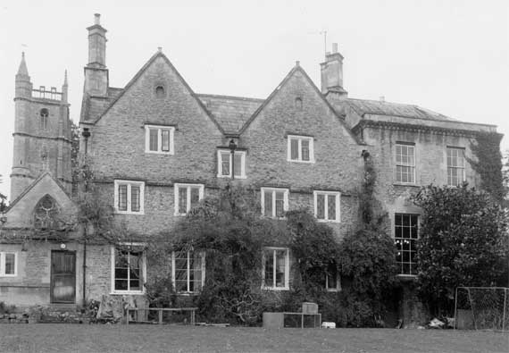

Type of building:
Small country house (the former north wing is now under separate ownership)
Listing:
Grade ll*
Plan and elevation:
Original house single pile, two units, 2 1/2 storeys and cellar. Single unit north
extension on 3 storeys. Further single storey extension to the south and a garden
cellar.
Summary of the probable main building
history:
Late 17th Century (1672 date stone). Extended early 18th Century. Additions
in the mid 19th Century and extended in the mid-late 20th Century.

East elevation
Exterior:
The property is approached from the west through a stone gateway, chamfered
with a depressed four-centred arch with hipped hood over. West elevation of
the central or main part of the house is constructed of coursed rubble stone
with dressed stone quoins and has two steep gables, each with a keyed oculus
window. A later inserted two storied porch of ashlar masks the front entry which
has a dressed stone surround of double-ovolo section and is stopped. The first
storey of the porch bears the initials P over and central to RM together with
the date 1672. The second storey of the porch has an embattled parapet, a three-light
mullion window and carries a “Sun” fire insurance plaque no. 646132.
The ground floor of the main house left of the porch has two two-light mullion
windows of ovolo sections and right of the porch one two-light inserted casement
window with the evidence of now blocked former windows. Four two-light ovolo
moulded mullion windows light the first floor. The ground floor and first floor
windows are under return string courses rising to form drip labels over the
windows. On the second floor there are two two-light ovolo moulded mullion windows
plus one small central casement window also of ovolo section. The roof is pitched
and slated with two diagonally placed ashlar chimney stacks, one at each return
end of the main house. The east elevation is similar with evidence of earlier
windows now blocked. On the southern return there is a balancing blank window
and a blank oculus.
The northern extension as viewed from the western gateway is largely concealed by the former north-west extension (now a house under separate ownership -see property ref. BE 038). The “bridge” structure connecting the former extension to the main house at first floor level still exists. The northern extension possesses a parapet with a modillioned eaves cornice (which is also visible on the east gable wall of BE 038 as viewed from inside the roof space of this property). The rear or east elevation of the northern extension is pierced by two first floor and two second floor windows, six-over nine and six-over-six sashes respectively, and an entry at ground floor level.
The extension to the south of the house is of two parts. One, the earlier and smaller, of ashlar with a parapet, the other a larger and modern rubble stone construction. Outside, steps lead down to a cellar under the garden.
Interior:
Entry is direct into the hall which has a Bath stone flagged floor with flags
laid diagonally. Two plaster decorated beams span the ceiling, the plaster work
forming cornices. The staircase rises from the hall and has plain balusters
and a handrail finishing in a deep scroll. There is evidence that these present
stairs replaced an earlier semi-circular staircase with remnants of the newel
post and a former 1/2 light stair window extant. At the base of the stairs is
the entry to the cellar which runs under the room adjoining the hall to the
south. This south room is spanned by a rough cut timber beam, deeply chamfered
with stops, and exposed joists. There is also a triangulated stone fireplace
and wooden shutters to the windows. All appear to be later insertions. The cellar
below has a stone laid floor complete with drainage runnels. The rear (east)
wall is battered and measures approximately 80cm through the window opening
which is mullioned. Steps up from the north-east wall of the hall leads to the
first floor room of the northern extension. This room has a heavy eight-panelled
fielded door with a reeded wood surround containing corner medallions. The two
step-in windows have similar surrounds. All apparently of Regency design but
possibly later additions. In the west wall of the room there is an arched iron
fire grate of apparent late 19th Century design. Under this room and accessed
by steps leading down from the hall, there is a stone-flagged lower ground floor
room with a wide entry from the east and a further former entry which now blocked.
On the first floor, the south room of the main house contains a large stone fireplace of the very early 17th Century - with a depressed four-centred arched lintel and ogee moulded surrounds. The fireplace is possibly an insertion of a later date although the fittings for an iron fire back survive and now lined with apparent early bluish bricks about 8 1/2” x 2 1/2”. On the second floor, the window sill in a rear room is formed from what may be a church pew end or misericord with a carved angel’s wing.
From the roof space of the north extension, the mouldings on the gable end of the original main building are visible.
Date & development:
The house has undergone alterations at various periods. The 1672 date stone
for the original build seems correct. The house then being of the traditional
single pile, two unit plan with a first floor private room containing a fine
inserted fireplace. The property then presented a fashionable symmetrical house
with a porch (first stage), two steep gables, each with an oculus, and large
mullioned windows.
The “classical” north extension with its modillioned cornicing was constructed in the early 18th Century, linking the main house with its service block (now a separate residence - see BE 038). In the mid 18th Century, the façade of this extension was partially obscured by the building of the first floor of BE 038 to provide the house with a drawing room which was linked to the house by means of a bridge. Later, probably the mid 19th Century, the castellated second stage of the porch, the castellated part of the south extension and the gateway were added. The rest of the south extension is of the later 20th Century and is known to have replaced a conservatory.
Ownership/occupation:
Following Dobbie (pages 78-79), the initials on the porch maybe those of Richard
and Mary Panton. Panton, who died in 1711, was a physician who succeeded to
his father’s practice. Be that as it may, the property was advertised
for let in the “Gloucester Journal” for 23rd January, 1739, and
described, together with a dye-house and stove, as “Very convenient for
a Clothier, and has been a Place long-accustomed in that Way of Trade”
(see also the notes relating to the Stables, Stove House etc - ref. BE
039). At the date of the Tithe Map and Apportionment Schedule,1840, the property
was owned and occupied by Sarah Price, owner of the silk mill.
References and bibliography:
- B.M. Wilmott Dobbie “An English Rural Community”, Bath University
Press,1969
- “Gloucester Journal” 23th January, 1739, Gloucester Record Office
- Batheaston Tithe Map and Apportionment Schedule 1840, Somerset Record Office
- Nikolaus Pevsner “The Buildings of England: North Somerset & Bristol”,
Penguin Books,1958
- Victoria Art Gallery - Mowbray Green photographic collection
- Building of Bath Museum - Peter Coard Archives
- Title Deeds
Reference Pictures
| West elevation |
Property from the south west |
The junction of the late 17th century
house, the early 18th century extension and the late 18th century
former wing. |
Survey Drawings
| Ground Plan |
Basement and Cellar Plan |
Section |
Images from the Archives
| View from the east about 1900 |
Architectural detail sketches by
Peter Coard 1969 |